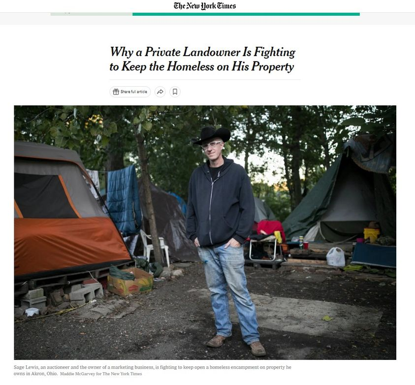

Mobile uploads
TINY HOUSES COMING FOR HOMELESS PEOPLE IN AKRON OHIO. Part 1/5
There has been a lot of excited talk about how our mayor, Shammas Malik, is proposing $150,000 to build 3 to 5 tiny homes for homeless people as a pilot project.
I am as thrilled as anyone can be about this potential. I’ve lost so many fights for so long to shelter any homeless person in new ways. This potential project feels like the cavalry finally coming to save these people. I’m emotionally filled with exhausted gratitude. If I cried I would be crying in thanks right now.
But the question is: what is the plan? How are we going to make this successful? What is the goal?
Over the last 8 years I have sheltered people in a wide variety of capacities in Akron. Tents, tiny houses, abandoned houses, regular houses and cars. I’ve learned a great deal about what can work and what won’t work.
I think it’s fair to say that I’ve developed some experiences that might be useful in developing the plan for this tiny house pilot project.
I would be delighted to talk to the city, or anyone else, about ideas on how to maybe structure this. But I certainly won’t be upset if I’m not involved at all. All I care about is that it runs and is successful so that it can grow.
I’m going to put my initial thoughts on the project in a 5 part series here on Facebook for anyone to read that cares to. And, like I said, I’ll gladly meet with anyone involved in the project that wants to talk. I just want it to happen.
Today I want to talk briefly about who I think should go in these first tiny houses.
There are 2 main ways you can look at tiny houses for homeless people: Transitional shelters as a stepping stone into traditional housing or permanent housing for people that prefer living in a tiny house village for a wide variety of reasons.
My suggestion is to use these first tiny houses as transitional shelters. Akron, and most of America really, is quite conservative in its thinking and ideology. People are very slow to adapt to new sociological ideas.
A lot of people feel uncomfortable seeing people live in tiny houses, cabins and tents. I’m not sure why, considering we lived that way FAR longer than the way we live today. But it is what it is.
You want to get some immediate wins on the board. You want people that are 6 months to 1 year away from getting a house.
These people need rock solid income like social security or disability. They should probably already have all their identification. And they should already be on all the lists for housing. AMHA and Home Again. They have to show very clear signs that they can work in the system. Are they working with CSS? Are they taking their medication? Are they in a recovery program? How long have they been sober? I don’t recommend active drug users.
The 3 to 5 people you put in these initial houses need to be barely homeless.
There needs to be a very clear application process. Make it multi-step. Will they show up to meetings on time? Will they return phone calls? (They also need to already have a phone.)
City council and the residents of Akron need to see nothing but hope and success. Feel free to pick people based on how appealing they look and how appealing their story is.
Elderly Black men often meet all these requirements.
These first few houses are nothing more than a public relations initiative. They are just the sales pitch for what is to come. It is crucial that the initial people succeed in achieving whatever goals are set out.
Initially, this needs to be a very rigorous program. Very clear requirements need to be communicated and expected from the initial participants. If they aren’t met they need to be removed from the tiny house and a new person needs to be put in.
I can’t express enough how important it is for these initial houses to be successful. The future of homeless sheltering depends on it.
I believe everyone should pay $300 to live in the tiny house. That money needs to be banked and then given to the homeless person when they get their house. It can be used for the deposit and first month or two of rent.
That’s how I generally think it should be run to start. Tomorrow I want to talk about who I think should run this.
Here are the 5 parts of this series:
Part1:
https://www.facebook.com/sagelewis71/posts/pfbid02qdKpvQUokYjhNCQFB2vNwZMu23jEP1GyEjPJX3b3NgmRsJPb2TcmWn1q6cGnCepml
Part 2:
https://www.facebook.com/sagelewis71/posts/pfbid0VJBepBsDjhvVsq5VPpxJi4Q1Y9Bkd3jFLkBj98bhy27r7wKWSZUBz3EH9M3MF1Ecl
Part 3:
https://www.facebook.com/sagelewis71/posts/pfbid0yGif9DxrXXMBefQ4FQKAQSmgTnwxebYGHituxAdShb1AEcdghkrB8NDzhBZqkTdNl
Part 4:
https://www.facebook.com/sagelewis71/posts/pfbid0YURT3Kk7jmH5PDh5a7eurrtAWWehbjUx3ZMh9RzK2ic3i9AgzzUJMHjKo8iuhohXl
Part 5:
https://www.facebook.com/sagelewis71/posts/pfbid0moxWt4AuDaKUYfdQZ6QjaSpr66gFv8j6oD8Uav2MptGiZ9mxBKyq1aXGQSp5N9qdl